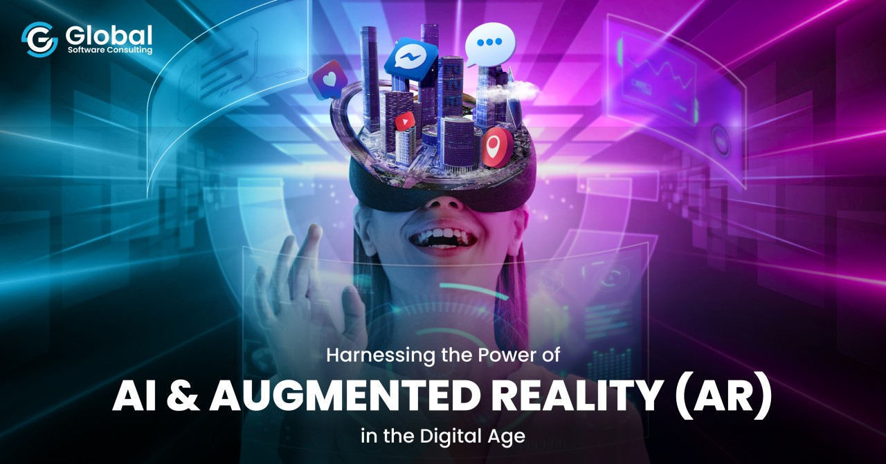
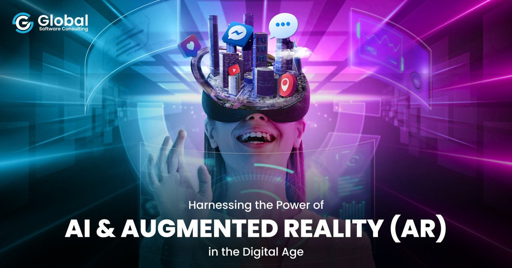

About the Project
⚡ Vision 2030 and Innovation
Vision 2030 is Saudi Arabia’s strategic roadmap for economic diversification and innovation. It aims to reduce the country’s reliance on oil by fostering advanced sectors such as technology, education, and tourism — with Augmented Reality (AR) playing a vital role.
🗺 Augmented Reality in Saudi Tourism
AR allows visitors to explore historical locations like Al-Ula and Diriyah through interactive mobile apps. These apps display ancient structures as they once stood, letting users travel back in time through immersive digital storytelling.
💻 Smart Cities and NEOM
NEOM, a centerpiece of Vision 2030, will embed AR into daily life. Residents will use AR for navigation, entertainment, and communication, creating one of the world’s most futuristic cities.
🏛 Interactive Urban Experiences
In cities like Riyadh and Jeddah, AR-enhanced walking tours provide real-time information about local landmarks, architecture, and culture, turning every street into a smart learning experience.
🎨 AR in Museums and Heritage Sites
Museums are using AR to turn artifacts into 3D experiences. Guests can scan exhibits to unlock animations, voice-overs, and digital interactions that deepen their understanding of Saudi heritage.
📚 Education Powered by AR
AR is revolutionizing classrooms by making learning more immersive. Students can explore 3D models, historical re-creations, and simulations, aligning with Vision 2030’s goal of modernized education.
📈 Economic Growth Through Tech
Tourism is expected to contribute 10% to Saudi GDP by 2030. AR-driven experiences enhance visitor engagement, making Saudi Arabia a global destination for innovative, sustainable tourism.
🔗 Blending Heritage with the Future
This project highlights how AR bridges the old and the new — preserving the Kingdom’s culture while showcasing it through cutting-edge technology, in perfect harmony with Vision 2030.
Gallery

 

Demo Video
Meet the Team
- Aser Abushal
- Ahmad Alsomali
- Areeb Sulimani